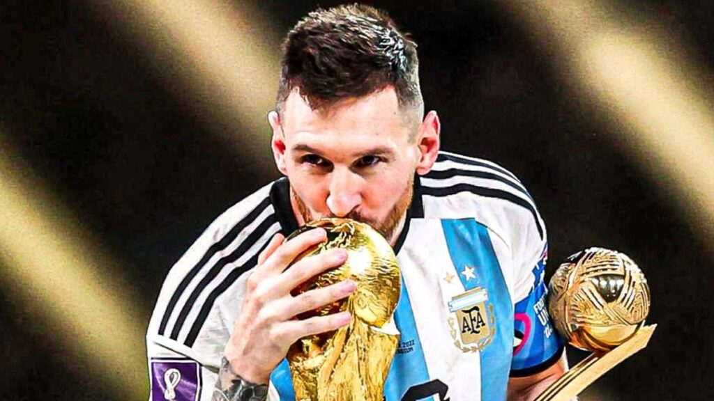

Lionel Messi
Bienvenido a un sitio dedicado a la vida, carrera y legado del mejor futbolista del mundo.
¿Qué encontrarás en esta página?
Este sitio está dedicado a explorar las distintas etapas y aspectos de la vida de Lionel Messi. Aquí podrás conocer:
- Carrera: Desde sus inicios en Rosario hasta su consagración mundial.
- Logros: Títulos, premios individuales y récords históricos.
- Vida personal: Su familia, valores y actividades fuera del campo.
Explorá cada sección para conocer en profundidad a uno de los más grandes íconos del deporte.
Un Vistazo a sus Inicios y Vida Personal
Lionel Andrés Messi Cuccittini nació el 24 de junio de 1987 en Rosario, Argentina. Criado en una familia trabajadora y humilde, desde muy chico demostró una pasión inigualable por el fútbol. A los cinco años comenzó a jugar en el club local Grandoli, donde su abuela lo llevaba a entrenar; ella fue una figura muy importante en su vida y siempre la recuerda en sus celebraciones de gol señalando al cielo.
A los 11 años, le diagnosticaron una deficiencia en la hormona del crecimiento, un tratamiento costoso que su familia no podía costear. Fue entonces cuando el FC Barcelona le ofreció la posibilidad de viajar a España y unirse a sus divisiones inferiores, cubriendo los gastos médicos. Esa decisión cambió su vida para siempre: dejó su país natal y, con solo 13 años, se instaló en Europa para comenzar una carrera que haría historia.
Fuera de las canchas, Messi es una persona reservada y familiar. Está casado con Antonela Roccuzzo, su amiga de la infancia, con quien tiene tres hijos: Thiago, Mateo y Ciro. A pesar de su fama mundial, lleva un estilo de vida tranquilo, centrado en su familia y sus seres queridos. Le gusta jugar con sus hijos, ver series, disfrutar del asado argentino y participar en actividades solidarias.
Además, en 2007 fundó la Fundación Leo Messi, con el objetivo de ayudar a niños en situación vulnerable a través de la educación y la salud. Su compromiso con causas sociales demuestra que, más allá del talento deportivo, también es una figura ejemplar en lo humano.